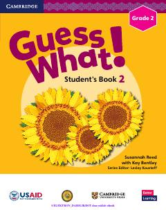

2I2-sinf o'quvchilari uchun mo'ljallangan ingliz tili darsligi.
Ushbu darslik O'zbekiston Respublikasi Xalq ta'limi vazirligi va USAID hamkorligida 2-sinf o'quvchilari uchun ingliz tilini o'rgatish maqsadida ishlab chiqilgan. Kitob turli mavzular, grammatik qoidalar va qiziqarli mashqlar orqali o'quvchilarning til ko'nikmalarini rivojlantirishga xizmat qiladi.